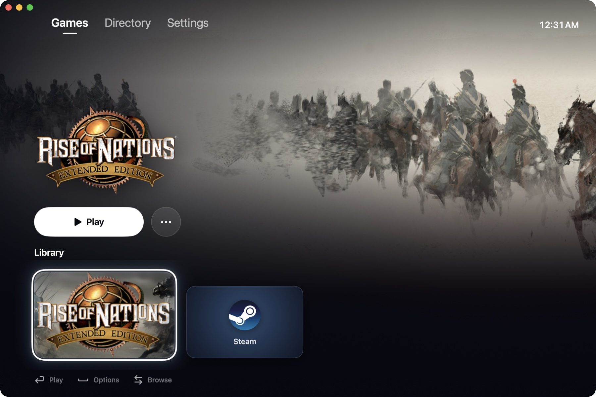

Play Windows games on your Mac.
crossfree installs Steam, Epic Games, GOG and four other stores in one click, and runs their games on Apple silicon with arm64 Wine and FEX. It is free, open source, and needs no virtual machine or Rosetta.
macOS 26.4 or later on Apple silicon (M1 or later). MIT license.

What it does
Everything you need to play Windows games on Apple silicon, without managing Wine yourself.
Your library, like a console
Full-window art from your Steam library and one row of games. Browse with the arrow keys or a PlayStation or Xbox controller; Play starts a game, and Resume brings back one that is running.
Every store, one click
Pick a store in the Directory. crossfree downloads its official installer, sets it up, and adds what it installs to your library. Any other installer works too.
- Steam Valve
- Epic Games Epic Games
- GOG Galaxy GOG
- Battle.net Blizzard
- EA app Electronic Arts
- Ubisoft Connect Ubisoft
- Rockstar Games Launcher Rockstar Games

Native on Apple silicon
Wine runs as arm64 code. FEX translates only the game's own x86 and x64 code, as it runs. Games show up in the Dock under their own names, and crossfree knows which ones are running.
Free and open source
MIT licensed: a Rust launcher and a SwiftUI app, built and released by GitHub Actions. No account and no tracking.
Install
A Mac with Apple silicon (M1 or later) and macOS 26.4 or later.
Download the latest crossfree DMG, open it and drag crossfree to Applications.
This build is not notarized yet, so macOS blocks a downloaded copy. Clear the quarantine once:
xattr -dr com.apple.quarantine /Applications/crossfree.appOpen crossfree, go to Directory and install Steam or another store. Its games appear under Games.
How it works
crossfree assembles proven open-source layers and builds the parts you touch.
- crossfree.appThe SwiftUI console: Games, Directory, Settings.
- crossfree CLIA Rust launcher: one Windows per game, per-game rules, icons, Steam artwork.
- Wine + FEXmach9's signed, notarized arm64 Wine, shipped inside the app.
- GraphicsDirect3D 9 through mtld3d, 10 and 11 through DXMT, 12 through vkd3d-proton, all on Metal.
Questions
What people ask before they try it.
Can I play Windows games on a Mac with Apple silicon?
Yes. crossfree runs Windows games on M1, M2, M3, M4 and later Macs with arm64 Wine, while FEX translates the games' x86 and x64 code to arm64. Whether a particular game runs depends on the game, its anti-cheat and the Direct3D version it uses.
Is crossfree an alternative to CrossOver or Whisky?
Yes. Like CrossOver and Whisky, crossfree runs Windows programs with Wine. It is free and open source (MIT), installs game stores for you, and works like a game console rather than a Wine manager.
Do I need Rosetta 2 or a virtual machine?
No. Wine runs natively on arm64, and FEX translates only the game's own code. There is no Windows license or virtual machine involved.
Which game stores work?
Steam, Epic Games, GOG Galaxy, Battle.net, the EA app, Ubisoft Connect and the Rockstar Games Launcher install from the Directory. Any other Windows installer works too, such as a setup.exe from a disc.
Is crossfree free?
Yes: no price, no account and no tracking. The code is on GitHub under the MIT license.